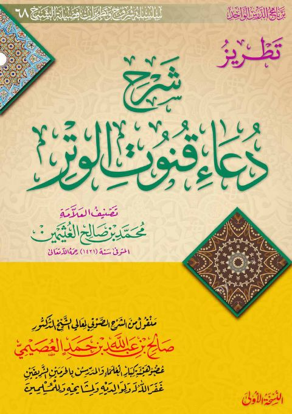

Downloads need an internet connection.
تطريز شرح دعاء قنوت الوتر عن صالح العصيمي- ملون
Authors: محمد بن صالح العثيمين
Publishers: برنامج الدرس الواحد
**▫️ العنوان: تطريز شرح دعاء قنوت الوتر عن صالح العصيمي- ملون** ▪️ المؤلف: #محمد_بن_صالح_العثيمين ▫️ الناشر: #برنامج_الدرس_الواحد ▪️ تاريخ النشر: 1428هـ 2007م ▫️ بلد النشر: القصيم، #السعودية ▪️ الطبعة: 1 ▫️ عدد الأجزاء: 1 ▪️ الصفحات: 42 ▫️ نوع الوعاء: #كتاب ▪️ التصنيف الرئيسي: #الفقه_وأصوله ۪